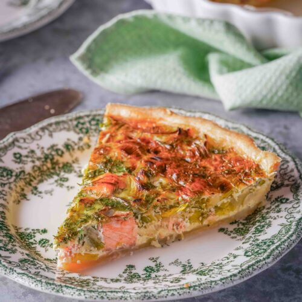

Salmon and Leek Quiche

Description
This salmon and leek quiche is a savory, elegant tart featuring tender flakes of fresh or smoked salmon and buttery, soft leeks encased in a rich egg custard and a flaky pastry crust.
Ingredients
For the crust
- 2 cups flour
- 1 stick of melted butter
- 1/2 teaspoon salt
- a splash of milk
For the filling
- 4 fresh leeks
- 400 g fresh salmon
- 3 eggs
- 1 cup milk
- 1 cup heavy cream
- Salt and black pepper, tt
Steps:
- In a mixing bowl, combine flour, butter, salt, and the egg. Mix with your hands until it looks like breadcrumbs.
- Add a splash of milk and continue to mix. Set dough aside to rest for 15 minutes
- Roll out dough between two sheets of parchment paper and place into a pie tin.
- Slice the leeks thinly (use white and light green parts). Sauté in butter or olive oil over medium heat for about 10 minutes, until soft.
- Cut salmon and place in the pie shell
- Cover with the sauteed leeks
- In a mixing bowl, combine eggs, milk, and cream. Beat until uniform in color and consistency.
- Pour into the pie shell.
- Generously season with salt and pepper.
- Bake uncovered at 180C for 1 hour
- Let it sit! You'll burn your mouth if you dig in too quickly.
- Serve and enjoy!
Home